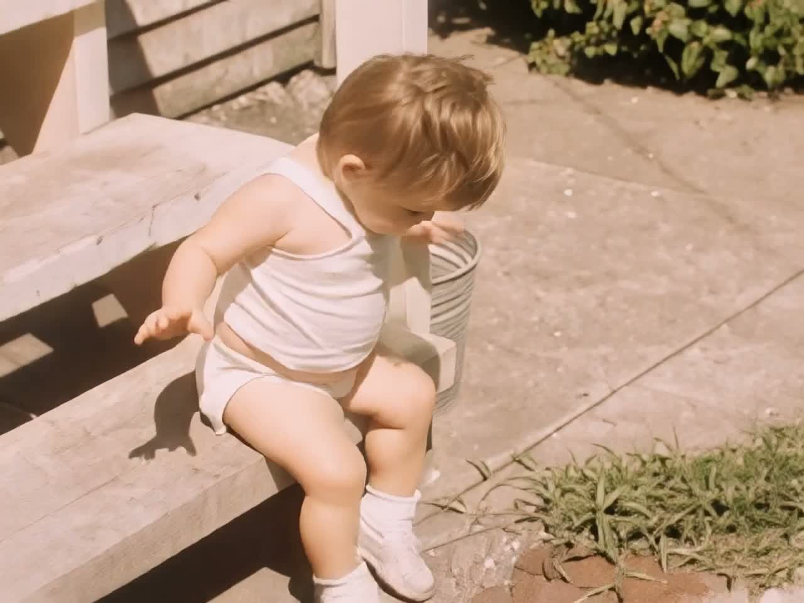
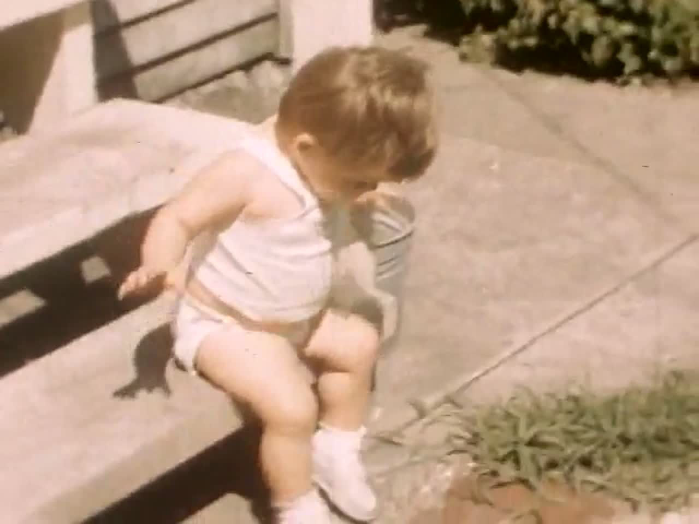
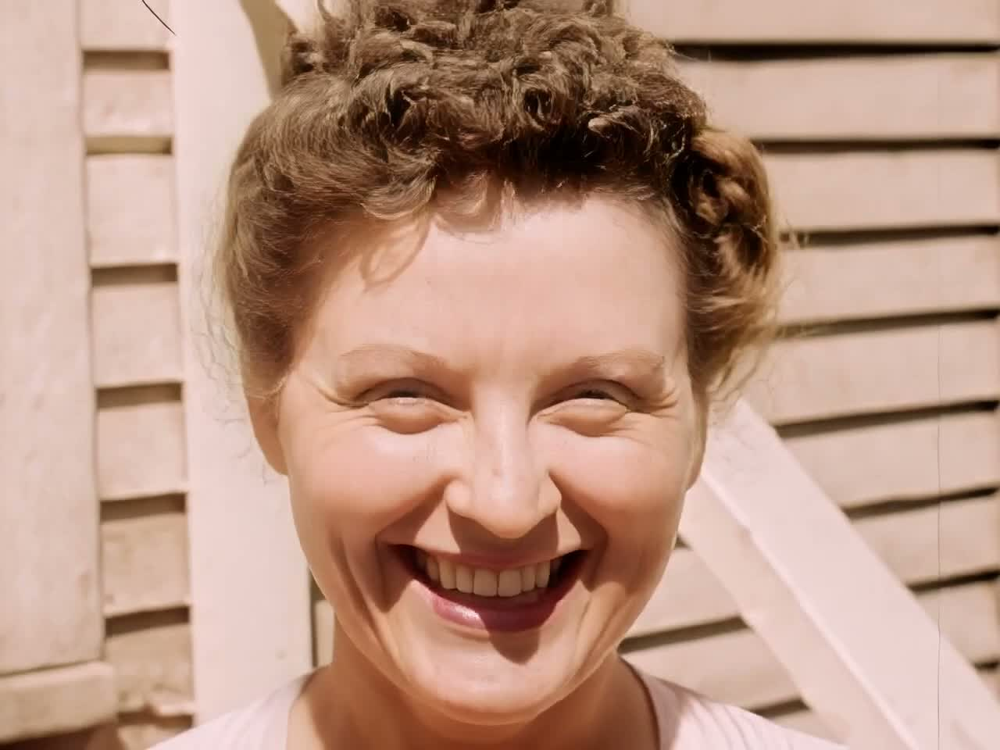
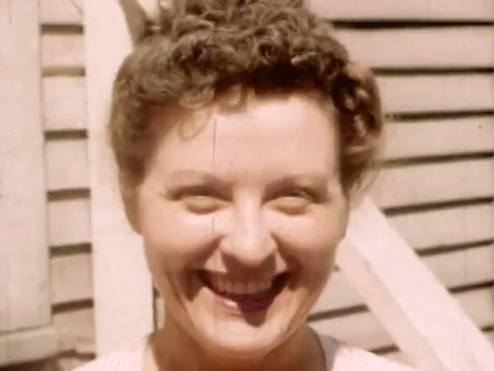

Old tapes look old.
This fixes that.
Feed Phoenix a capture from a VHS deck, an old camcorder or a DVD. It strips the tape noise, sorts out the combed motion, and rebuilds detail the tape lost decades ago.
It runs on your own computer. The footage never leaves it.
One payment. Every update included. Try it free on 60-second clips first.


The same clip, twice
Left is the untouched 1952 home movie. Right is what Phoenix gave back. Play both, then judge it full screen.




Footage: Texas Farm Family (1952), public domain, via the Prelinger Archives. Restored with Phoenix Enhanced.
What it does to the picture
Kills the tape noise
That crawling speckle VHS leaves behind, without smearing faces into wax.
Fixes combed motion
Old tape and TV footage is interlaced, so anything that moves gets a torn, striped edge. Phoenix untangles it.
Rebuilds lost detail
Hair, fabric, the lettering on a sign. Things the tape blurred into a smudge come back readable.
Keeps the grain
Film should still look like film. Phoenix puts texture back so the result doesn't go plastic.
- 1 Drag your video onto the window.
- 2 Phoenix reads the footage and picks its own settings.
- 3 Go and make a cup of tea.
- 4 Save the result wherever you like.
One price
Phoenix Upscaler
$129once
- Yours permanently. Nothing renews.
- Every future update included, free.
- No watermark, any clip length.
- Install on 3 of your own computers.
- Works offline once activated.
Card & UPI payment handled by Lemon Squeezy. Your key arrives by email immediately.
Try it first
The free download restores 60-second clips with a small watermark, so you can point it at your own tape and see the result before paying anything.
Compared to the alternative
Topaz Video AI is where most people end up. It's good, it's built for film crews, and it runs around $299. If you're restoring a shoebox of family tapes rather than grading a feature, you're paying for a lot you'll never open.
Download
What you need
A reasonably modern PC with a dedicated graphics card. Phoenix leans on the GPU, so a laptop with integrated graphics will work but will be slow. 16 GB of memory is comfortable. A full-length tape takes hours rather than minutes, so most people set it going and leave it overnight.
No NVIDIA card? Restore in the cloud
The desktop app needs an NVIDIA GPU. If you're on a Mac, an AMD or Intel machine, or just don't want to install anything, use the cloud studio: upload a clip, see the exact price in dollars, pay for that one job, and download the result. No account, no subscription, no credits — and a failed job is refunded.
Runs on datacenter GPUs. Your file is deleted after the job.
Questions
Does my video get uploaded anywhere?
No. Everything happens on your machine. Once activated, Phoenix doesn't need an internet connection at all.
Is this a subscription?
No. You pay $129 once and it's yours, including every update afterwards. Nothing expires, nothing renews.
What files can it open?
MP4, MOV, MKV and AVI. If you've captured a tape with a USB capture stick, whatever it produced will almost certainly work.
How long does a tape take?
Longer than you'd like. A two-hour tape is an overnight job on most machines. It's doing real work on every frame, and there are around 180,000 of them.
Can I put it on my other computer?
Yes, up to three at a time. Release one from inside the app and move it to a new machine whenever you want.
Will it make a bad tape look like it was shot yesterday?
No, and be wary of anything claiming otherwise. Detail the tape never recorded can't be recovered, only guessed at. Phoenix aims for a clean, honest picture rather than an invented one.